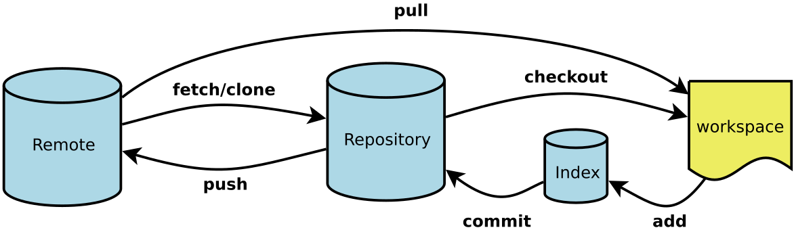

起源
Linus在1991年创建了开源的Linux内核，从此Linux便不断快速发展，早期是由Linus本人通过手工管理代码，Linus坚决地反对使用CVS和SVN，理 由是集中式的版本控制系统不但速度慢、且必须联网才能使用，到2002年Linux系统已经发展了十年了，代码量之大让Linus很难继续通过手工方式 管理了，于是Linus选择了一个商业的版本控制系统BitKeeper，BitKeeper的东家BitMover公司出于人道主义精神，授权Linux社区免费使用这个版本控制系统，不过2005年开发Samba的Andrew试图破解BitKeeper的授权协议(这么干的其实也不只他一个)，结果被BitMover公司发现了，于是 BitMover公司要收回Linux社区的免费使用权，这时候如果Linus可以向BitMover公司道个歉，保证以后严格管理社区使用规范，但是Linus没有道歉、而是自己居家办公、花了两周时间、自己用C写了一个分布式版本控制系统、这就是Git(https://github.com/git/git))，然后一个月之内， Linux内核的源码就全部迁移到Git进行版本控制管理了。
- git客户端支持MacOS、linux、windows等系统。
Git 安装
官网直接下载
编译安装
$ cd /tmp
$ export GITVERSION=git-2.49.0.tar.gz
$ wget --no-check-certificate https://mirrors.edge.kernel.org/pub/software/scm/git/$GITVERSION
$ tar -xvzf $GITVERSION
$ cd git-2.49.0/
$ ./configure # 检查系统环境并设置构建所需的配置，确保所有依赖项都已满足
$ make # 根据 Makefile 文件中的指令编译 Git 源代码
$ sudo make install # 安装 git 命令
$ git --version # 输出 git 版本号，说明安装成功
git version 2.49.0
安装 Git 后，还需要将 Git 的二进制目录添加到 PATH 环境变量中，否则可能会因为找不到相关命令而导致报错。可以通过以下命令添加目录：
$ tee -a $HOME/.bashrc <<'EOF'
# Configure for git
export PATH=/usr/local/libexec/git-core:$PATH
EOF
Git 最小配置
配置 user.name 和 user.email
git config --global user.name 'your_name' # 你的目标用户名
git config --global user.email 'your_email@domain.com' # 你的目标邮箱名
Config 的三个作用域
缺省等同于 local
git config --local # local 只对某个仓库有效
git config --global # global 对当前用户所有仓库有效
git config --system # system 对系统所有登录的用户有效，基本不用
查看 config 的配置，加 --list
git config --list --local
git config --list --global
git config --list --system
一个简单的 Git 操作流程
初始化 git 仓库：git init。
会把当前目录作为项目目录，并在当前目录生成一个隐藏文件夹 .git 。不要去修改这个文件夹下的任意东西。
// 查看当前状态
git status
// 添加文件到暂存区
git add
// 提交
git commit -m "备注"
// 查看历史提交信息
git log
// 如果提交日志乱码，右键 --> options --> Text --> 将编码改成utf-8
.git 目录
HEAD 文件，指明目前的分支
ref: refs/heads/main
config 文件
[core]
repositoryformatversion = 0
filemode = false
bare = false
logallrefupdates = true
symlinks = false
ignorecase = true
[remote "origin"]
url =
fetch = +refs/heads/*:refs/remotes/origin/*
[branch "main"]
remote = origin
merge = refs/heads/main
[gui]
wmstate = normal
geometry = 1205x669+2122+663 276 304
.gitignore 忽略文件
在仓库中，有些文件是不想被git管理的，比如数据的配置密码、写代码的一些思路等。git 可以通过配置从而达到忽视掉一些文件，这样这些文件就可以不用提交了。
- 在仓库的根目录创建一个
.gitignore的文件，文件名是固定的。 - 将不需要被git管理的文件路径添加到
.gitignore中
# 忽视idea.txt文件
idea.txt
# 忽视.gitignore文件
.gitignore
# 忽视css下的index.js文件
css/index.js
# 忽视css下的所有的js文件
css/*.js
# 忽视css下的所有文件
css/*.*
# 忽视css文件夹
css
Git 命令详解

名词解释:
Workspace：工作区;
Index / Stage：暂存区;
Repository：仓库区（或本地仓库）;
Remote：远程仓库;
git add(重点)
- 作用：将文件由工作区添加到暂存区，暂存文件
- 命令：git add 文件名
- 例如： git add index.html
- git add --all 或者 git add -A 或者git add .（简写） 添加所有文件
- git add a.txt b.txt 同时添加两个文件
- git add *.js 添加当前目录下的所有js文件
git checkout 分支管理
情况 1：推送到现有的非 main 分支
如果你本地已经在一个分支上工作，且远程仓库（GitHub）也已经有了这个分支：
- 切换到目标分支（例如分支名为
dev）：git checkout dev - 添加并提交更改：
git add .git commit -m "你的提交信息" - 推送代码：
git push origin dev
情况 2：推送到一个全新的分支
如果你在本地创建了一个新分支，但 GitHub 上还没有这个分支：
- 创建并切换到新分支：
git checkout -b feature-abc - 提交代码（同上）：
git add .git commit -m "新增功能 abc" - 推送并建立关联： 使用
-u参数可以让你以后在该分支下只需输入git push即可，无需重复分支名。git push -u origin feature-abc
切换分支
切换回原分支非常简单。Git 就像一个“平行宇宙”切换器，你只需要使用 checkout 或更现代的 switch 命令即可。
快速切换命令
如果你记得原分支的名字（假设是 main），直接运行：
- 传统命令：
git checkout main - 现代推荐命令：
git switch main
小贴士：
git switch是 Git 近几年推出的专门用于切换分支的命令，比checkout更易读、功能更专注。
快捷技巧：回到“上一个”分支
如果你刚才在 main 分支，临时切到 dev 推送代码，现在想立即回到刚才的分支，不需要打名字，直接用：
git checkout - 或 git switch -
这里的 -（减号）代表上一个所在的分支，就像电视遥控器上的“返回前一频道”功能。
切换前的注意事项
在切换分支时，如果你的本地还有**未提交（uncommitted）**的修改，Git 可能会阻止你切换以防代码丢失。你有两个选择：
-
提交掉： 先
git add和git commit。 -
暂存起来： 如果你不想现在就提交，可以使用：
git stash（把修改暂时存入“储藏室”）- 切换分支并处理完事务
- 切回原分支后，运行
git stash pop（把修改拿回来）
git commit（重点）
- 作用：将文件由 暂存区 添加到 仓库区
- git commit -m "提交说明"
git status
- 作用：查看文件的状态
- 命令：git status
- 命令：git stauts -s 简化日志输出格式
git log
- 作用：查看提交日志
- git log 只能查看当前 head 以及以前的日志
- git log --oneline 打印简洁的日志信息
- git log -n10 --oneline
- git reflog 查看所有的提交变更日志
git reset
- 作用：版本回退，将代码恢复到已经提交的某一个版本中。
- git reset --hard 版本号 将代码回退到某个指定的版本(版本号只要有前几位即可)
- git reset --hard head~1
将版本回退到上一次提交
- ~1:上一次提交
- ~2:上上次提交
- ~0:当前提交
git 常用命令：
git客户端常用基础命令：
git clone #克隆代码到本地
git push #提交代码到服务器
git pull #更新本地代码
git add index.html、abc/、 . #添加指定文件、目录或当前目录下所有数据到暂存区
git commit -m “xx“ #提交文件到工作区
git status #查看工作区的状态
git mv #修改文件名
git reset --hard HEAD^^ #git版本回滚， HEAD为当前版本，加一个^为上一个，^^为上上一个版本
git reflog # #获取每次提交的ID，可以使用--hard根据提交的ID进行版本回退
git reset --hard 5ae4b06 #回退到指定id的版本
git config --global user.name “NAME” #设置全局用户名
git config --global user.email xxxx@yy.com #设置全局邮箱
git config --global --list #列出用户全局设置
# git branch #查看当前所处的分支
# git checkout -b develop #创建并切换到一个新分支
# git checkout develop #切换分支
git log #查看操作日志
vim .gitignore #定义忽略文件上传
git 新建的仓库怎么提交
cd existing_folder
git init --initial-branch=main
git remote add origin http://ip/组名/项目名.git
git add .
git commit -m "Initial commit"
git push --set-upstream origin main
将一切纳入版本控制
将一切纳入版本控制，这是配置管理的金科玉律。比如软件源代码、配置文件、测试编译脚本、流水线配置、环境配置、数据库变更等等，你能想到的一切，皆有版本，皆要被纳入管控。
软件本身就是一个复杂的集合体，任何变更都可能带来问题，所以，全程版本控制赋予了我们全流程追溯的能力，并且可以快速回退到某个时间点的版本状态，这对于定位和修复问题是非常重要的。
比如之前遇到的问题：生产环境正常，测试环境新配置的镜像一运行就报链接库异常，后来发现是有人修改了测试环境的 ConfigMap，将其中的一个 LD_LIBRARY_PATH 设置为了空。
不过，纳入版本控制并不等同于把所有内容都放到 Git 中管理。有些时候，我们很容易把能力和工具混为一谈。Git 只是一种流行的版本控制系统而已，而这里强调的其实是一种能力，工具只是能力的载体。比如，Git 本身不擅长管理大文件，那么可以把这些大文件放到 Artifactory 或者其他自建平台上进行管理。